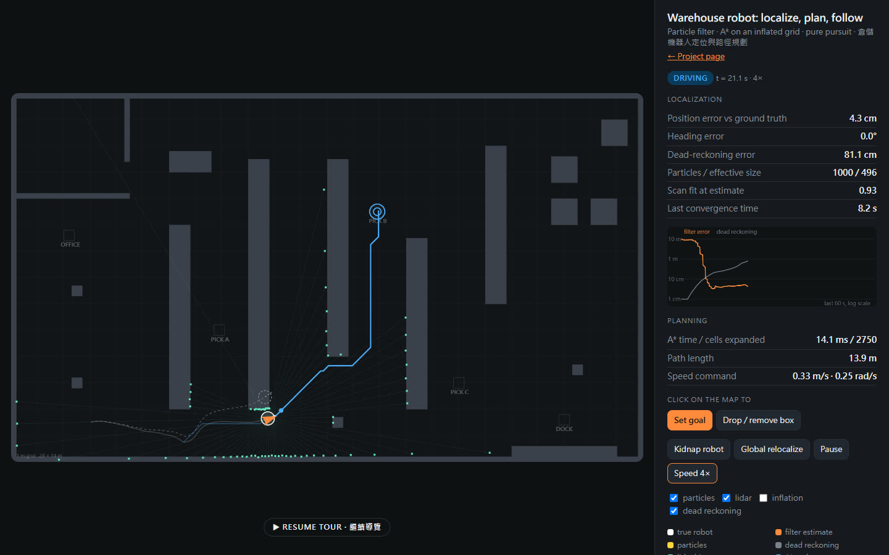

Results · 測試結果
From node test/bench.js (200 random seeds per row) and the unit tests in test/.
| Global localization, no initial guess | 200 of 200 runs converged (< 10 cm held for 1 s, still true after 90 s); median 7.9 s, 90th percentile 23 s |
|---|---|
| Tracking error while driving | mean 5.3 cm, 95th percentile 6.36 cm |
| Wheel odometry alone, same kind of run | median 8.77 m off after three deliveries (120 s), even when given the true start |
| Kidnapped robot | 191 of 200 recovered to < 10 cm within 90 s; the lost state was noticed after a median 0.3 s, back under 10 cm after a median 6.7 s |
| A* vs Dijkstra | same optimal cost on all 291 solvable random maps and on all 10 station pairs; A* expands 30% of Dijkstra's cells on the warehouse, median 6.41 ms |
Simulation only, with the simulator's own noise model. The cloud stays spread over several candidate aisles for a median 6.3 s before it commits; the other 9 kidnap runs did not settle within 90 s (look-alike aisles). Full numbers: results.json

How it works · 方法
| Robot and sensors | Differential drive, 0.42 m wheel base. Encoders carry 2% noise and a 1.5% right-wheel radius error, so odometry alone drifts. 72-beam 360° lidar, 15 m range, 2 cm noise, 2% dropouts. |
|---|---|
| Localization | Monte Carlo localization: odometry motion model, likelihood-field sensor model on a Euclidean distance transform of the map, low-variance resampling when the effective sample size drops below N/2. 5,000 particles while searching, 1,000 while tracking. |
| Global search | The scan likelihood is tempered: each update uses the largest exponent that keeps the effective sample size above 55% of N, and resampled particles are jittered by 8 cm. Without this the cloud collapsed onto one wrong spot within a second, so the cloud now passes through several candidate places while the robot wanders and sees more of the aisles. |
| Lost and found | Augmented MCL injects random particles when the short-term fit drops below the long-term fit. A scan-fit score at the estimate tells the robot it is lost. It then stops, clears what its lidar marked, and searches globally again. |
| Planning | A* on an 8-connected 10 cm grid, octile heuristic, no corner cutting, obstacles inflated by 0.35 m. Lidar returns that the prior map lacks go onto a costmap. Beams that pass through clear them, and the path is replanned when it is blocked. |
| Following | Pure pursuit with a 0.5 m look-ahead. Speed drops with curvature and near the goal; the robot turns in place when the target is behind it. A bumper model stops the true robot short of any contact and backs it up if it stays stuck. |
| Code | Plain JavaScript modules in src/, no libraries. The same code runs the page, the tests and the film. |